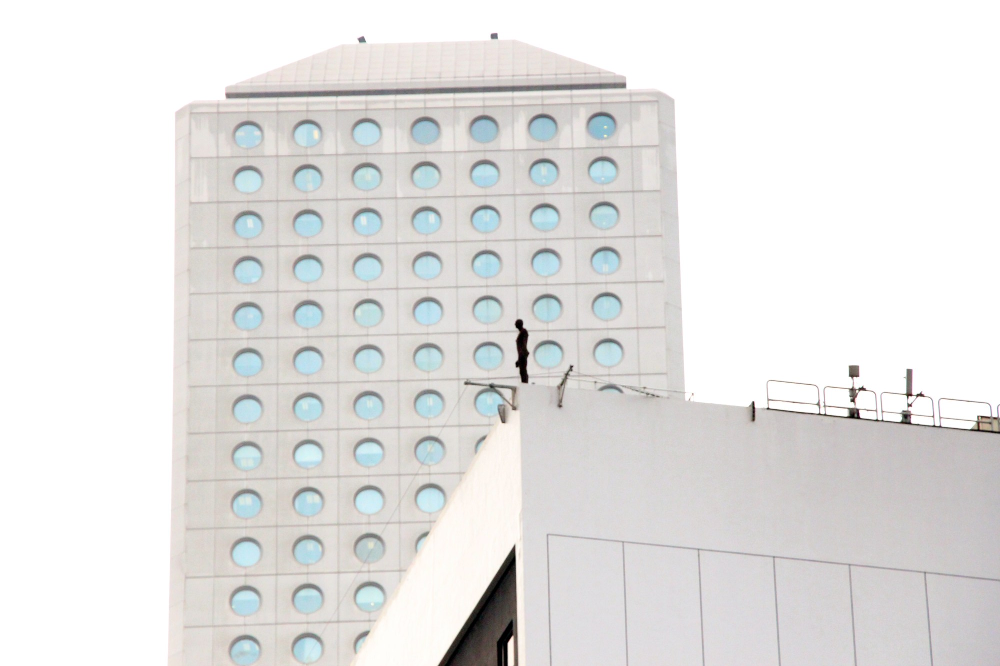
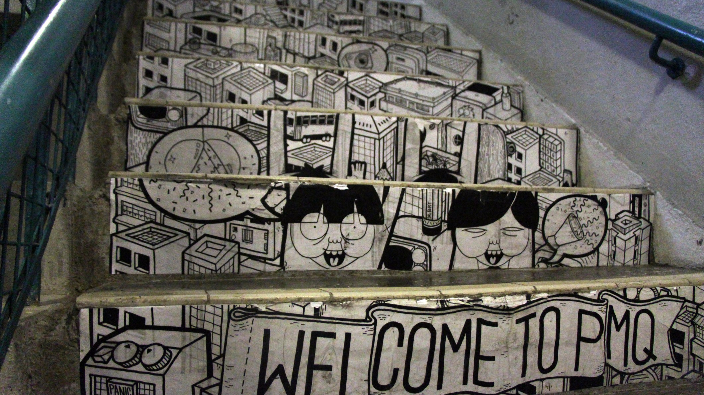

DOES HONG KONG APPRECIATE PUBLIC ART?
When the public art installation “Event Horizon Hong Kong” was first displayed on a rooftop in Central in November, 2015, people mistook the sculpture of a life-sized naked man as suicide suspect and called the police in panic.
“I spotted it long time ago. But to be honest, I don’t know why it has to be there,” said Chu Tze-yan, an orchestra member who works nearby.
The controversial art project featured 31 fiberglass sculptures modelled on the artist Antony Gormley’s body, standing on street or rooftops across the city. The idea was to underline relationships between human and spaces, says Mr Gormley.
Yet seeing little appreciation, the artwork embraced dozens of police calls of suicide attempts, which mirrored the public’s misinterpretation and lack of understanding of public arts.
“Public arts allow free thinking and the community may not feel comfortable with sculptures like that at first,” said Antony J. Chan, the organizer of the “Event Horizon Hong Kong” and the head of Arts and Creative Industries of British Council.
Public art is not a stranger to the work-oriented metropolitan – early in 1999, the “Public Art Scheme” was launched by the government to boost creativity and bring artistic elements to the public, introducing more than 20 sets of public arts pieces since then.
But the seemingly sophisticated public art is faced with obstacles finding bosom friends in the public, who regards the sculptures more like decoration than arts.
“I don’t see the needs of understanding those artworks thoroughly. It is fine enough that the arts make the place more beautiful and visually attractive to me,” said Travis Mackanzie, a tourist from Washington.
He and many others deemed it as a pleasure to have the artworks though they could not get the messages behind accurately.
In view of this, the British Council organised series of outreach programs, ranging from workshops to online promotion campaign.
“Those engagements are also useful to promote the artistic value of other public arts,” said Mr Chan. “We hope to demonstrate how to make people have a better art appreciation, and by doing so can public art be more well-promoted in the future.”
Mak Yee-man, a Hong Kong sculptor, also agreed on the approach of having public education to promote the public art. She created a sound installation called “The Symphony of Nature” which is displayed in the Trade and Industry Tower in San Po Kong.
The art piece is made of brass in a C-shape, with the idea of unveiling the natural sound which is often neglected by the fast-paced society. The brass arc is designed to vibrate with the slightest movement and people could hear the voice of vibrations by putting their ears near the brass.
“My artwork and sound installation in general are more difficult to be understood as they are more abstract, so usually people need more guidelines in order to understand them,” said Ms Mak.
Although a QR code linked to a soundtrack of vibration has been placed next to the artwork and some art tours for children have been hold to help the artwork promotion, it appears that the public needs more than that.
Ms Joanne Wong, a senior clerical officer working in the Trade and Industry Tower said that she couldn’t realize that she need to hear the sounds from the artwork in order to appreciate it.
“I couldn’t understand it if I just pass by the sculpture, but as I always observe the sculpture in my lunch break, I know that it’s something about nature from its appearance,” said Ms Wong.
Given the difficulty in conveying the idea behind the artwork, Mr Mak said visual attraction appears to be one of the top priorities.
“I don’t expect people know my work at once. I hope it could make a visual impact on them first, leave a space for them to think, and wait them come back to the work again,” the scrulptor said.
Another artist, Roger Mak, echoed with her opinion. He is an artist of Brainrental that recently created a public art of step painting, conveying the great hospitality of Hong Kong by using universal symbols representing “Welcome” in the Former Police Married Quarters (PMQ) in Sheung Wan.
“It is normal that people would have different interpretations towards an artwork, so it doesn’t matter if they cannot get our message clearly. It is more important to attract people first and leave a space for them to think,” Mr Mak said.
Given the well-rounded guidelines in the museum, people may find it easier to comprehend the abstract concepts behind the artworks. However, for public art which is in public area without detailed description, better appreciation may come with a lot more efforts.